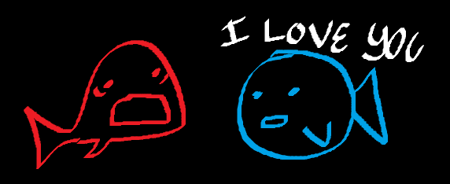

eggnog.articles
uuhhhh IDK
A review of one fish two fish red fish blue fish by Dr. Seuss
♪Pebble Beach - Vince Guaraldi Trio♪

Dr. Seuss was going crazy with this one. Overall, I'd say One Fish Two Fish Red Fish Blue Fish is pretty
solid. Here are some of my favorite parts:
The very, very bad fish on page 7 reminds me of a few people I know. This guy I know named Vincent fits the
bill here. He's the same one that is forcing me to watch One Piece. AND he has glasses. How much worse can
you get? Another person that reminds me of the very, very bad fish on page 7 is Hitler. That guy did some
bad stuff.
Page 18 and 19 has got to be my favorite section. You gotta love the Mr. Gump's seven hump Wump. The only
other contender is the section on page 38 and 39 about the kid who boxes his Gox. I'm a real sucker for
stupid shit like that.
While I enjoyed the book, there are parts of it that make me want to die. Once I got to the Yink that drinks
pink ink, I was ready to shoot myself. I felt like I had completely lost touch with reality. How many stupid
fucking animal things does this Seuss guy know about? How am I possibly supposed to go on in life knowing
about all this bullshit? Yops, Zeds, Mikes, Neds-just shut the fuck up already I'm fucking losing it! IT'S
EATING AWAY AT MY SANITY HELP HELP HELP HELP HELP ZEEP SHEEP GOX FOX FISH ISH! A worm is tunneling through
my frontal lobe, consuming for the sake of consumption, not considering the harm it does on a broader scale,
just eating and eating and eating. When will he eat enough? Will I ever recover? What type of demon sent
into this world? The worm is getting fat, but it keeps going. The fat swells and swells, crushing the worm's
internal organs. It takes the last bite of my brain and finally bursts.
But other than those small criticisms, the book was a good time. I'd give it 4/5 stars.